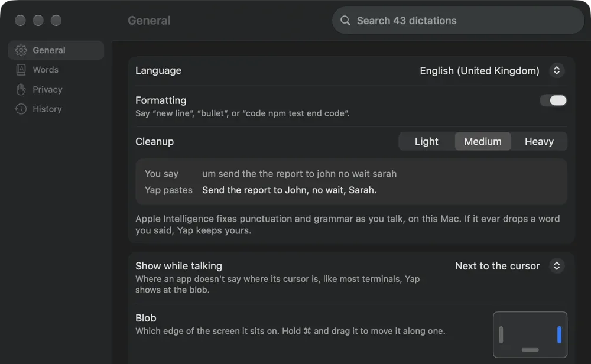
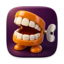
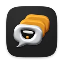

speak now.
hold fn, talk, let go, and it's pasted wherever your cursor is. it uses the speech model that comes with macos, so nothing leaves your mac.
brew install --cask 0xdeafcafe/tap/yapor download Yap.zipmacos 26, free.
a blank space.
your cursor's in it.- hold fn. here, space does the job.
- talk. words come in grey, then settle.
- let go. it's pasted at your cursor.
hold this, or space, to talk to the page. click anywhere in the text to move the cursor. double-tap for hands free, esc cancels.
without your mic it plays a sample i wrote.
it turns up where you're typing.
a small bubble sits just under your cursor, sized to the text you're typing in, the way macos's own dictation does, and gets out of the way as your words land.


untitled.txt
dear john,
put your cursor anywhere in here and hold space. it opens right under it.
most terminals don't say where their cursor is, so there it opens out of a little blob on the edge of your screen instead, like the one on this page. hold ⌘ and drag the blob to move it.
pick your era.
the menu bar icon has your last few transcripts and opens settings: history, the language you speak, how much it tidies, and which face it wears.



i knew you were trouble.
it reads the window you're in for names and odd words. hear “reddis” with Redis on screen and it writes Redis, underlined so you can see it did, and after a few times it learns the swap for good. it never touches an ordinary word, and doesn't keep what it read.
LangWatch
btw => by the way
drop: basicallyadd your own to ~/.config/yap/words.txt. this page has that file loaded, so try saying “btw”.
it tidies, too.
um, the the build is fine.
we are never ever getting back together.
i wrote yap to replace wispr flow, which sat on 1.3 gb of ram and about 5% cpu whether i was talking or not. yap sits on about 0.1 gb and only does anything while you're talking.
| engine | errors | wait | ram |
|---|---|---|---|
| parakeet v3 (mlx) | 7.4% | 0.5 s | 1.1 gb |
| wispr flow (cloud) | 7.4% | 0.6 s | 1.3 gb |
| yap (apple speechtranscriber) | 8.6% | 0.9 s | 0.1 gb |
| whisper large-v3-turbo | 11.1% | 1.4 s | 0.9 gb |
on an m1 max. nobody hand-checked these, so each engine's scored against what the others agreed on. yap isn't the most accurate. it's the one that leaves your ram alone.
nothing leaves your mac.
it uses apple's on-device speech model, in any language it knows, so it's free and there's nothing to send. transcripts are kept for 30 days, then deleted. recordings are off unless you turn them on. settings › privacy deletes the lot.
this page is different. press “use my mic” and your browser does the listening, and chrome, for one, sends that audio to google.
give your keyboard a minute.
brew install --cask 0xdeafcafe/tap/yapor download Yap.zipmacos 26, free.
it'll want the microphone (to hear you) and accessibility (to see fn and press ⌘V). quit wispr flow first, or both will paste.
while it runs, fn is yap's, so the emoji picker and apple's dictation don't open. your setting comes back when you quit. other apps can listen in on ~/.config/yap/live.sock, which is how rush shows your words as you talk. the format's in the readme.
build it yourself
it needs macos 26 and xcode's command line tools, then ./bundle.sh && open Yap.app.